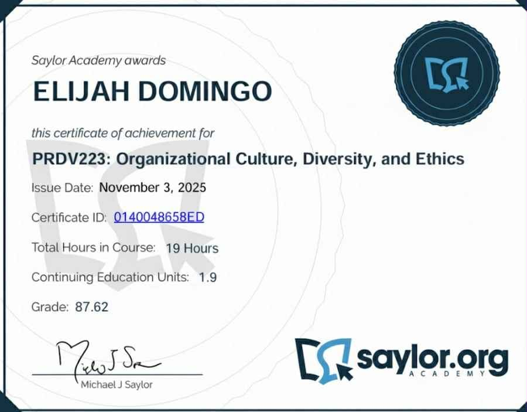
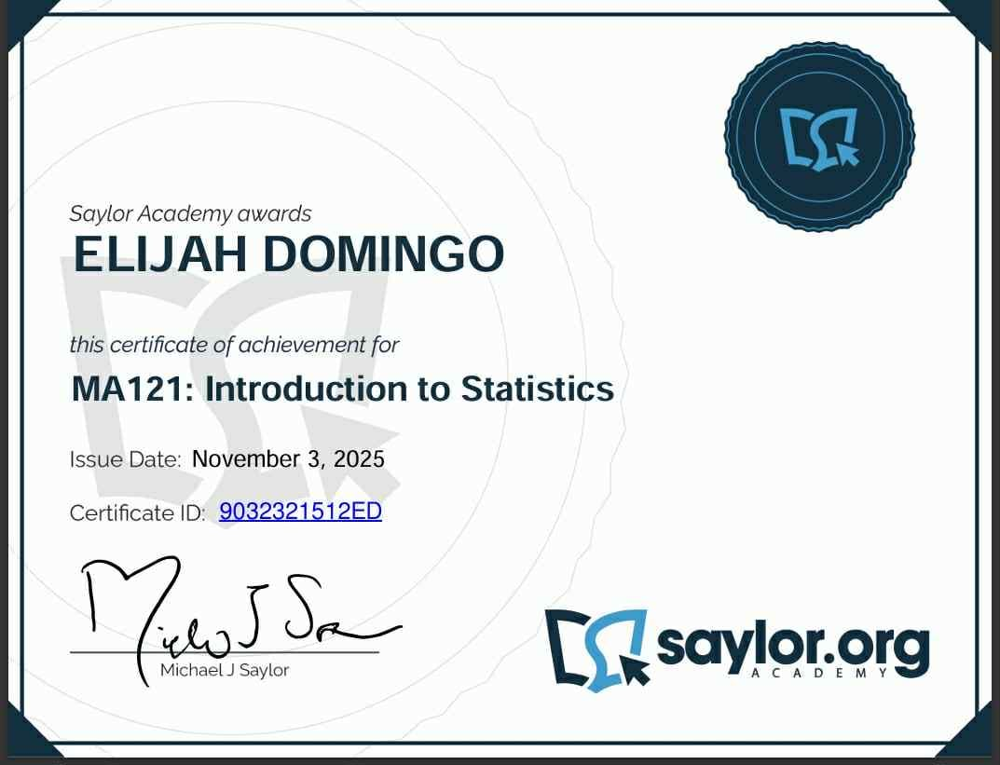

Certificates
These certifications demonstrate my commitment to professional development. Click any certificate to view it in full size.



I help businesses create beautiful websites, mobile apps, and grow their brands through an amazing digital experience.
See My Works →Here are some of the projects I’ve built showcasing my diverse skillset:
These certifications demonstrate my commitment to professional development. Click any certificate to view it in full size.
A breakdown of the tools and technologies I use to bring digital ideas to life.
I’m currently a **3rd-year college student** at SSCR de Cavite, working hard to grow both academically and professionally in the field of software development and design.
Alongside my studies, I work as a **manager at Inggos’s Café**, where I handle daily operations, lead the team, manage inventory, and help create a welcoming and efficient experience for every customer. This role has sharpened my **leadership, communication, and problem-solving skills**, which are highly valuable in tech projects.
Here are some moments from my work at Inggos’s Café, highlighting my non-tech skills and environment:

Here’s the core value I can provide to clients and teams:
I'm currently open to new projects and collaboration opportunities. Let's build something great!
Email: elijah.domingo@gmail.com
LinkedIn: linkedin.com/in/elijah
GitHub: github.com/elijah